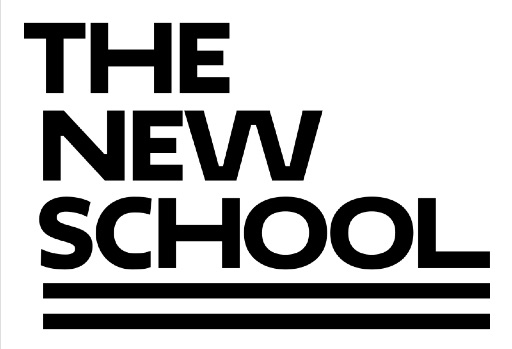
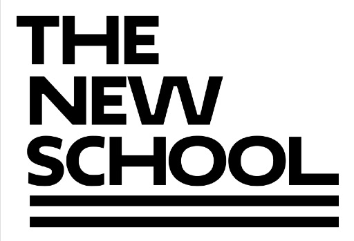

MANHATTAN, NY - In a conversation with Jessica Williams, a Senior Journalism and Photo major, the concept of design fostered an interesting discussion about the personal aesthetics of consumers. When a design team gets together to create for the masses, the process must involve a way of figuring out how that one thing can be aesthetically pleasing and/or functionally superior to a huge group of people (and if not, the product should have more feature benefits that outweigh the need for visual/structural continuity altogether), so what happened when the overall consensus is negative?
That question can't necessarily be answered on a general scale, past the idea that some designers are lazy by choosing to not take into account what works for other companies or products. However, while I spoke with Williams she noted that in the case of the New School logo redesign a few years ago, the choices of the designer to emulate an unique, sleek and modern typeface based on the requests of the community still didn't pan out well, at least in her opinion Remembering it's introduction almost 4 years ago now brought back a feeling of contempt toward the logo for Williams. "It's almost worse than comic sans," she said.
On the other side of the spectrum, there are designs that can, objectively, reflect the absolute (or closest to) best. These designs show how well done simple research and audience engagement can create a truly successful product. To Williams, this looks like the Nintendo Switch, a half-console, half-portable game player that came out in 2017. Besides the smooth and modern look, the Switch's main appeal is the sophisticated physical capabilities. "It's one of the best things I've ever played," Williams said, "it's like a Gameboy and a Wii combined."
For a further look into Williams thoughts on both the Nintendo Switch and the New School Logo, read below for some basic bullet points based on our conversation.